qpos -- amd spec
introduce
amd PQOS ~= intel RDT
amd PQOS 和 intel RDT 实在是太像了，cpuid，包括MSR命名 格式几乎都一样。所以，之后的很多章节，我们仅把图片粘贴上， 以便之后查找。
overflow
features
POS 包括两个主要的功能:
- PQOS Monitoring(PQM): monitoring the usage of shared resources
- L3 cache occupancy
- L3 cache bandwidth
- PQOS Enforcement(PQE): set and enforce limits on usage of shared resources
- L3 cache allocation
- L3 cache bandwidth
features detect
PQE, PQM
通过 CPUID Fn0000_0007_EBx[PQE, PQM] 来查看PQOS主要功能检测 :
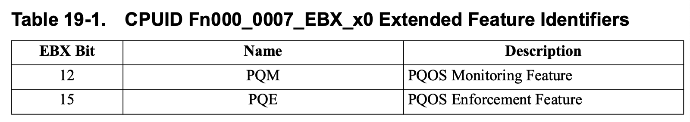
PQOS Versions
PQOS相关的attribute和capablities也使用CPUID 报告, 但是某些早期CPU使用PQOS version, PQOS version 和具体的 Family/Model 关系如下:
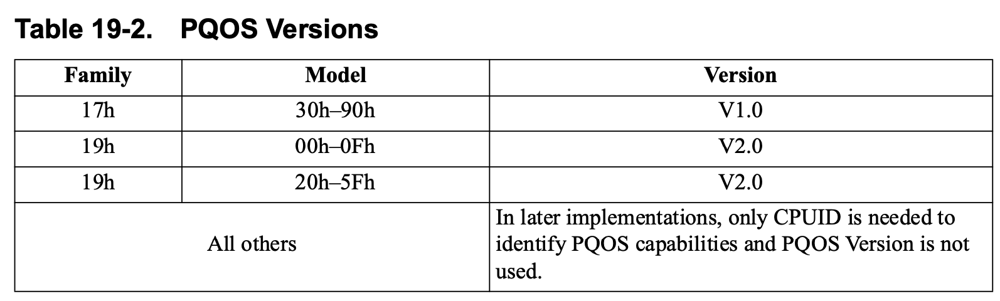
capablities && attribute of PQOS
- Fn0000_000F: PQM
- Fn0000_0010: PQE
具体的细节，我们放到之后的章节中分别介绍。
PQM
CPUID (PQM)
- Fn0000_000F_EDX_x0:
- EDX[bit 1] L3CacheMon: 是否支持L3 monitoring
- EBX: RMID 最大值
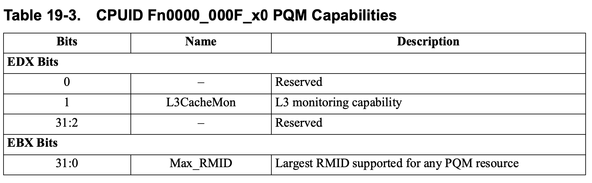
- Fn0000_000F_EDX_x1: 是否支持某些monitor的sub feature
- EAX
- non-zero: it indicates the size of the L3 monitoring counter, offset from 24 bits.
- 0: the counter size is determined by the PQOS version number
在PQM MSR章节中会介绍
- EBX: counter scaling factor, 在通过QM_CTR 获取到counter值的时候， 需要在乘 scaling factor 来获取实际的 cache occupancy/bandwidth(bytes)
ECX: identifies the largest RMID for L3 monitoring
- EDX[bit 0]: L3 Occupancy
- EDX[bit 1]: L3 total bandwidth
- EDX[bit 2]: L3 local bandwidth
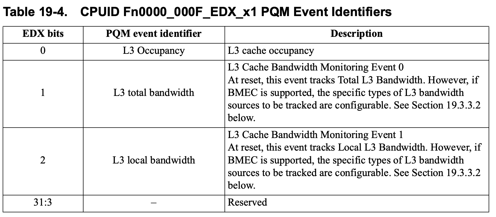
- EAX
Fn8000_0020_EBX_x0: 包含一些PQM和PQE的一些扩展功能:
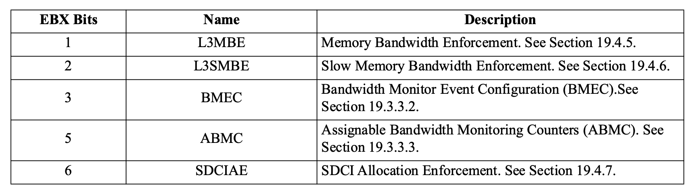
其中BMEC和ABMC是PQM功能，其余都是PQE功能。
configuration
PQM MSR
PQR_ASSOC
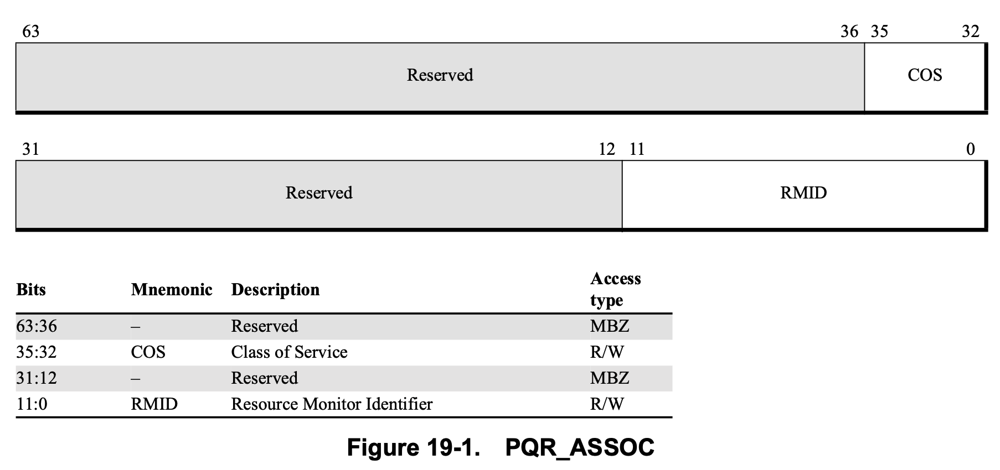
QM_EVTSEL
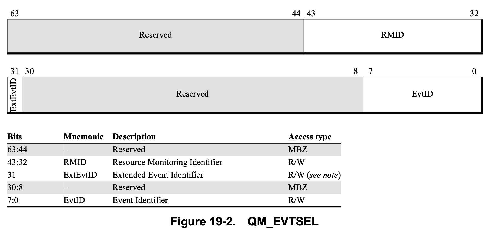
和intel rdt不同的是, qpos似乎支持一些Extended Event
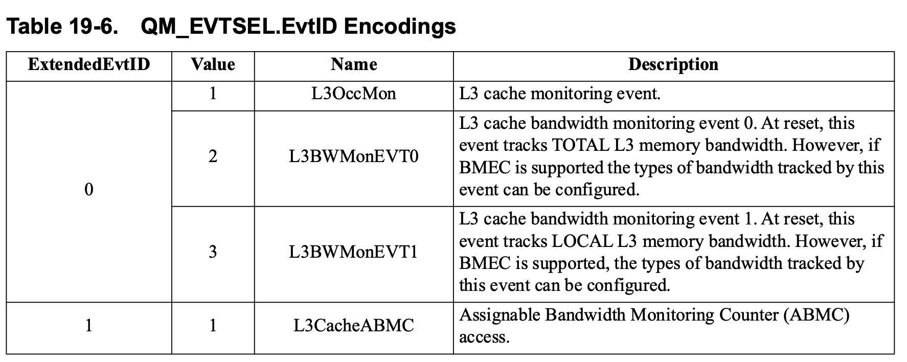
Q: 为什么要这么搞呢，按照道理EvtID[bit 0-7] 可以配置255个字段, 为什么要 弄一个类似于二维的字段呢
A: 不知道
QM_CTR
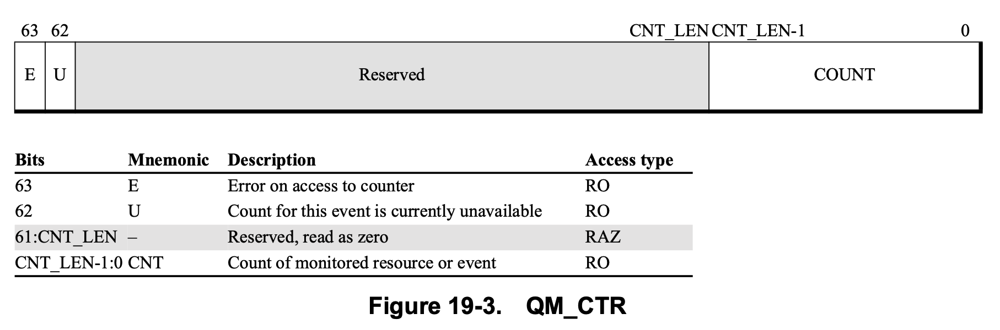
其中, 关于CNT_LEN 可以在 CPUID Fn0000_000F_EAX_x1[CounterSize]中获取到。 具体值为(CounterSize + 24)
但是如果获取到CounterSize的值为0， 则需要根据PQOS Version 来判定:
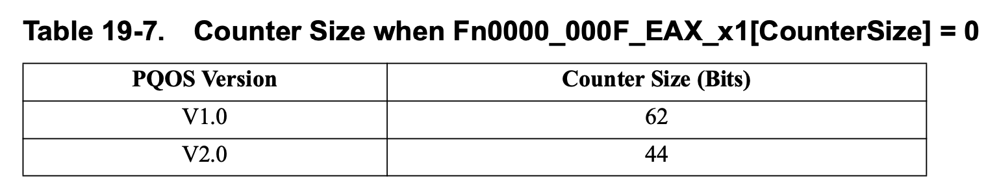
Monitoring L3 Occupancy
如前面提到eventid为1，其他略， 和rdt cat 功能一样
MBM
MBM eventid 类型如下:
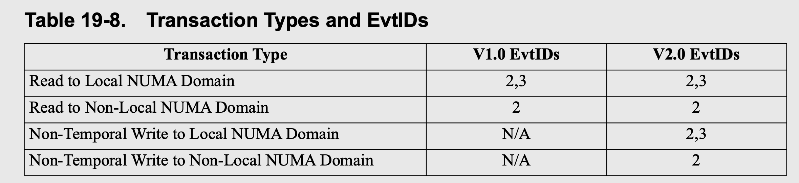
- read to Local NUMA Domain: 为什么需要两个eventid。
因为
- evtid 2 获取 total
- evtid 3 获取 non-local
所以 local = evtid2 - evtid3
- non-temporal 参考amd sdm
4.6.1.2 Move non-temporal, 大概的意思 是说，操作的数据是非临时数据，短时间内不会访问到(非临时的意思是， 这个数据比较稳定，现在store了一个值，短时间内不会被访问修改)
从上面来看，evtid 和 并且但是其多了一些更细粒度的控制eventid功能， 主要有两个:
- BMEC
- AMBC
BMEC
BMEC feature 允许软件配置指定的L3 transcation 被监控计数。其提供了一组n个MSRs, – QOS_EVT_CFG_n , 其用来指定对应的L3CacheBwMonEvt
例如QOS_EVT_CFG_1 对应与 L3CacheBwMonEvt_1, 其对应的EvtID是3，而QOS_EVT_CFG_1则 可以配置指定EvtID 3 的 BW type, 如下图所示
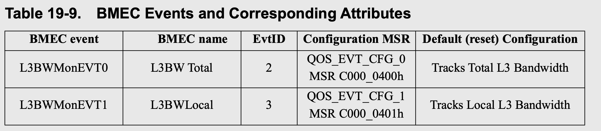
上图还展示了EvtID 2 默认配置为 Total L3 Bandwidth, EvtID 3 的默认配置为 Local L3 Bandwidth
CPUID
BMEC 通过cpuid 获取如下信息
- Fn8000_0020_EBX_x0[BMEC] (bit 3): 判定BMEC功能是否支持
- Fn8000_0020_EBX_x3[EVT_NUM] (bit 7:0): 指示 QOS_EVT_CFG 中的 n
- CPUID Fn8000_0020_ECX_x3: 指示哪些类型的L3 tranaction 被counted
QOS_EVT_CFG_n, n 值表示EVT_NUM ， 其在实现中 >= 2
QOS_EVT_CFG_n MSR details
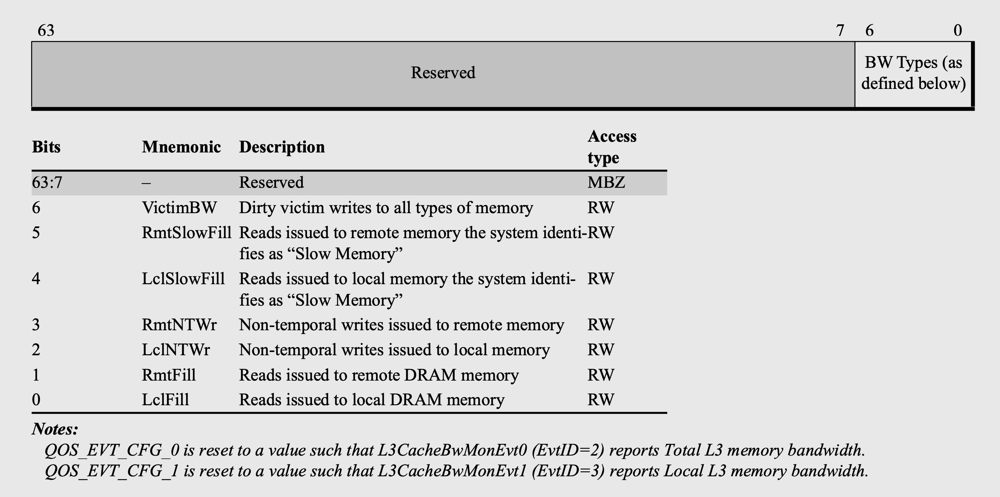
所以，该功能就是提供了一种方式，可以指定EvtID的BW type。可以是一个集合(QOS_EVT_CFG_n 中多个bit置位)
AMBC
AMBC 就更加灵活, 支持指定一组counter , 这些counter 用来计数特定的RMID（COS）,BwType, counterID, 并且查询这些counter时，也仍然使用QM_EVTSEL, QM_CTR. 只不过在设置 QM_EVTSEL时，按照另一种方式配置，下面会介绍。
我们来看下具体细节:
- CPUID: Fn8000_0020_x5
- EAX: 指示counter的大小以及counter的overflow bit
- EBX: 指示支持的ABMC counter的数量
- ECX: 指示能不能在 QOS_ABMC_CFG 中的BwTSrc字段中填写COS 而非RMID
L3_QOS_EXT_CFG
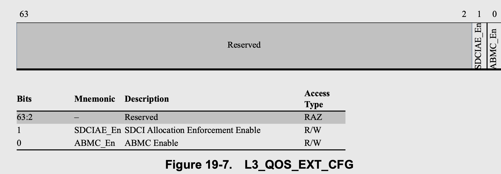
该MSR 用来使能ABMC 功能.( 当然还有一个PQE相关功能 SDCIAE, 在PQE 章节中会介绍)
L3_QOS_AMBC_CFG MSR
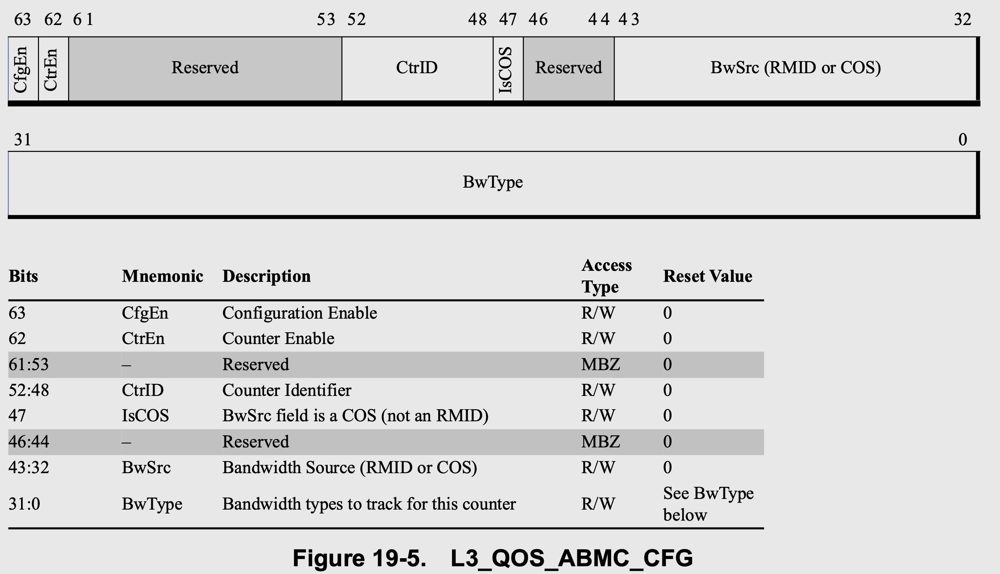
- CfgEn: 如果使能，则表示本次会配置该register 分配到（作用于) CtrID中指定的counter, 反之则不会有任何配置
- CtrEn: 如果使能，则表示本次会使能对 Bw Type field tracking.
- CtrID: 表明该寄存器作用与哪个counter
- IsCOS: 指示 BwSrc 是 COS 还是RMID
- BwSrc: COS/RMID
- BwType: 上图中展示了。
L3_QOS_ABMC_DEC MSR
读取该寄存器，获取的是 QOS_EVT_CFG 的配置的值, 所以其格式和 几乎QOS_ABMC_CFG MSR相同. 但是有一个字段需要注意下:
- CfgErr: 如果是1， 则表示上一次配置是invalid，并且相应的counter 是not enabled.
这两个寄存器用来，获取/更新 当前 AMBC 配置.
- QM_EVTSEL - 通过下面方式选定:
- EventedEvtID: 12
- EvtID: L3CacheAMBC
- RMID: 需要配置为counter id
- QM_CTR 读取QM_EVTSEL 选定的 counter值
PQE
PQE 功能主要分为:
- CAT
- CDP
- L3 bandwidth allocation
- L3 slow memory bandwidth allocation
- SDCI allocation enforcement
CPUID Fn0000_00010_EDX_x0 用来 指示 是否支持L3 Alloc
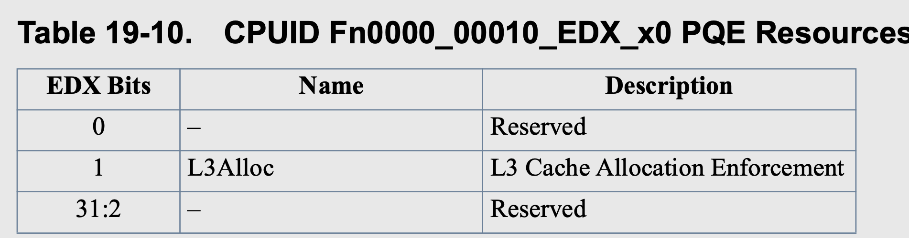
CPUID Fn0000_00010_x1_ECX_1 来指示是否支持哪些sub-feature:
- EAX: 指示 CBM_LEN
- EBX: 指示 L3 Cache Allocation Sharing Mask
- ECX: 指示是否支持一些增强功能，例如CDP
- EDX: 指示 COS_MAX
我们分功能介绍
cat
这里我们不过多介绍CAT, 因为大部分和rdt一样，只不过CBM对应于L3_MASK.
但是需要注意一点，CPUID Fn 0000_0010_EBX_x1[L3ShareAllocmask] 表示其他的一些function肯定会共享这些L3 cache。所以，在L3ShareAllocMask 中bit为1时， 对应的cache即便是配置了各个CPU对应的CLOS 的L3_MASK 没有overlap，也仍然有其他的function 和该cpu争抢cache。
L3BE
我们主要关注下这部分，其功能配置和rdt很不一样。
AMD 的带宽控制，是允许软件配置一个最大的带宽限制(通过 L3BE MSR), 该值是一个absolute bw number:
1
2
3
L3BE value ++ == limit BW + 1/8 GB/s, 所以跟rdt的比例throttle还不一样。
我们看下具体细节
- CPUID
- Fn8000_0020_EBX_x0L3BE: 指示L3BE是否支持
- Fn8000_0020_x1:
- EAX[30:0]: BW LEN(下面会介绍)
- EDX[31:0]: L3BE feature支持的最大 COS number
L3QOS_BW_CONTROL_n MSRs （用来配置 bw limit)
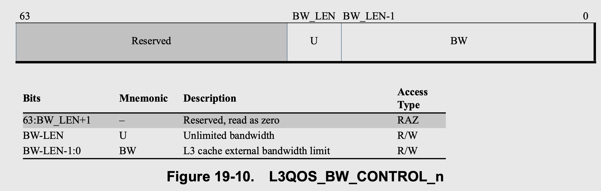
- U(unlimited): 当设置是，表明当前COS bw 不受限制，该MSR中的BW字段被忽略
- BW: expressed in 1/8 GB/s increment
在某些时候，某个COS怎么也达不到设置的受限制，可能是由于下面原因:
- The specified limit may be greater than the maximum system bandwidth.
内存总带宽受限
- The sum of the limits applied to all classes of service in the domain may exceed the maximum bandwidth the system can deliver to that COS domain.
软件配置的所有其他cos limit 超过了系统能给该COS domain的最大带宽。
- Multiple COS domains which share the same memory channels may demand more total bandwidth than the shared memory can supply.
内存通道受限
- I/O or other system entities may consume a large fraction of system bandwidth and result in less bandwidth being available to the various processor COS domains.
I/O 设备抢占带宽
- Large amounts of write traffic may affect the memory system’s ability to deliver read bandwidth.
写带宽影响了读带宽
手册中还举了一个例子, 大致为，有两个COSx, y. COSx 配置 limit A， COS y 配置Limit 2 * A. 此时总带宽为 2 * A, 带宽肯定不够分，此时 分配给COS x A， COS y A， 而不是按照其比例，分配 (2/3)* A 给COS x， (4/3) * A 给 y.
另外, 当CDP enable时，L3QOS_BW_CONTROL 只能用0, 2, 4, 6这样的index寄存器， 例如
- COS 0 -> index 0
- COS 1 -> index 1
- COS 2 -> index 2
所以，该寄存器只能用一半。这样的操作很迷, 不知道为啥。
L3SMBE
L3SMBE 配置和L3BE 很像，只不过是控制slow memory 带宽，不再赘述。
SDCIAE
Smart Data Cache Injection 可以让I/O 设备访问L3 cache. 避免直接访问内存， 这样可以减少对内存带宽的占用。
而SDCIAE 功能则可以限制 SDCI 所占用的L3 cache的portion.
该功能页很简单，如果开启了该功能，只允许SDCI 使用L3MASK[MAX_COS]指示的缓存， 例如如果 MAX_COS 是15， 则SDCI 将根据 L3_MASK_15 分配缓存。